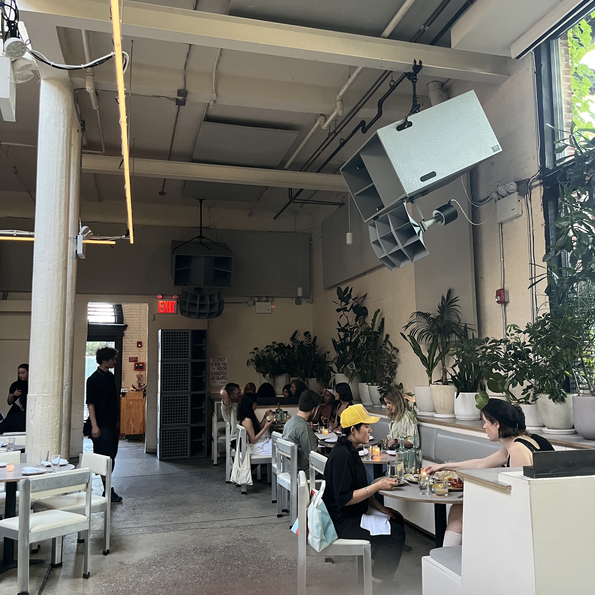

sadnoise_

Majorly overkill on the new ojas system at the atrium at public records. I wouldn't want a giant heavy grey sharp box hanging above my head while I eat my $30 gnocchi and $28 Negroni. These systems are beginning to become too militant, the minimalist box and cannon-like klipch style horns. The sound is great, the array of 8 folded horns for bass at the back are nice, and it nice to have full range and all that up high, with the amazing dispersion from the Altec multicell horns, but these aesthetics of the capital D design hifi and listening is becoming overwhelming, especially with 6 of these two way horns. There's a balance between cute and cozy and strait up evil. Not always can these spaces integrate speakers into the architecture of the space but it becomes a problem when they are overly dominating and feel more like security cameras than hifi speakers. Ojas has come a long way from the system built for the main room at public records, these feel more balanced in the bass area but definitely have a smile and lack presence of mids, this seems to be his personal preference. Seems like everyone and their mother is opening a hifi bar or cafe in ny and most of them unfortunately probably sound bad, so I'm always happy at public records, but it's becoming a trend and it's hurting the art. It's becoming less for the people and more hey look at me I'm an enormous grey loudspeaker.
There is already the conversation in synths and audio technology with their naming conventions compared to names of military technology, the SH-101, the Altec 806A, the AK-47, are they all the same? Sound system culture breaks this often but it always makes its way back and in this case it takes the form of form and shape, in these grey bass cannons.
There is already the conversation in synths and audio technology with their naming conventions compared to names of military technology, the SH-101, the Altec 806A, the AK-47, are they all the same? Sound system culture breaks this often but it always makes its way back and in this case it takes the form of form and shape, in these grey bass cannons.